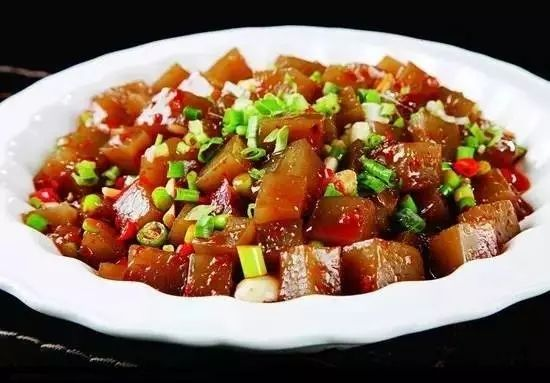

舌尖上的开封
开封的饮食文化源远流长，是中国十大菜系中"豫菜"的发祥地。开封菜也以独特的汴京风味成为豫菜的代表之一。 开封的诸多佳肴中，最吸引人的有桶子鸡、套四宝、灌汤包、羊肉炕馍、羊双肠等。 开封著名的餐饮老字号有:第一楼、又一新、稻香居、黄家老店、马豫兴等。另外在鼓楼夜市上也可品尝到非常有当地特色的风味食品。灌汤小笼包
小笼包子原名灌汤包子，俗称汤包。包子在北宋都城东京（今开封）的市场上已有售卖，是当时七十二家正店之一“玉楼”的名品，时名为“山洞梅花包子”，号称“在京第一”。 北宋南迁传到临安（今杭州）又称“灌浆馒头”为当时著名的市食小吃。20世纪30年代，第一楼名厨师，将大笼蒸制改为小笼蒸制，且连笼上桌，始称“小笼灌汤包子”。 “一楼，一楼，更上一层楼”。这是今年来开封人对第一楼最新评价，因为单一品种的小笼包子，已发展成为风味独特的系列产品“小笼包子宴”和“速冻包子”，使其更具有鲜明的时代气息。 其“小笼包子宴”，又称“什锦风味包子宴”，是包子大师曹振杰率众徒创新和研制的。包子分为灌汤、鱼仁、翡翠、鸡丁、韭头、蘑菇、南荠山楂、虾仁、素馅与麻辣包子十大风味。 十笼包子依次品尝，可谓变换中耐寻味，妙在其中；口感上层次分明，渐入佳境。
桶子鸡
桶子鸡店相传创立于北宋时期，据说，其技艺是从皇宫御膳房传出。 由于桶子鸡选料严格，制作讲究，故其成品形体圆美，不裂口，不破皮，色泽鲜黄，味香爽口，入口嚼起来既嫩又脆，油而不腻。桶子鸡整只趁热撕吃，不走油，不跑味。 如果切食，刀口则十分讲究。先用刀从鸡身中间左右切为两半，然后再分为前脯、后腿，皆切成细条，腿膀剁成小块，提箸而食。
套四宝
套四宝是开封的传统菜肴，堪称“豫菜一绝”。 “套四宝”绝就绝在集鸡、鸭、鸽、鹌鹑之浓、香、鲜、野四味于一体，四只全禽层层相套，个个通体完整，无一根骨头。 每当酒席宴会上过几道菜之后，这道菜便用青花细瓷的汤盆端上，展现在食客面前的是那体形完整、浮于汤中的全鸭。其色泽光亮，醇香扑鼻。
炒凉粉
炒凉粉：是当地人非常喜欢的一种风味小吃，在开封很多地方都有卖的。 其做法：凉粉为主原料，在加入少量的油，豆酱、葱、姜，然后用锅盖焖一下即成。其特点：热香鲜嫩，焦而不糊。
羊双肠
羊双肠又叫羊双肠汤，属于豫宴之一，是用羊的大肠和小肠熬制而成。 据“老开封”讲，过去卖羊双肠的大都没有固定的摊位，而是担着挑儿沿街叫卖， 担子的前边放着用劈柴燃烧的小炉子，炉子的上面放着熬汤的小深兜锅，担子的后边放着事先熬好的老汤、肠子和碗筷。解放后卖羊双肠的才有固定的摊位。
羊肉炕馍

羊肉炕馍是开封著名小吃之一，制作原料主要有葱末，盐、孜然等，羊肉炕馍是用薄薄的白面饼中间裹着羊肉末和一些特制的调料，吃起来面饼筋道，焦香肉末味十足，很有嚼头。